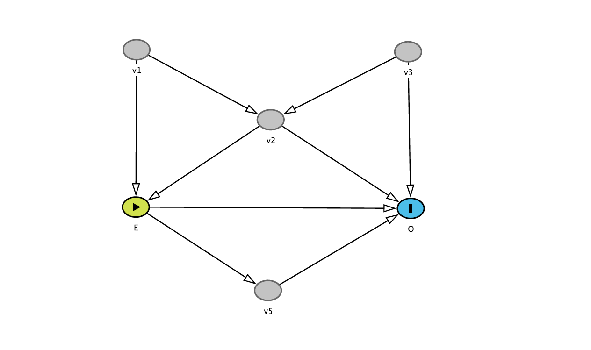
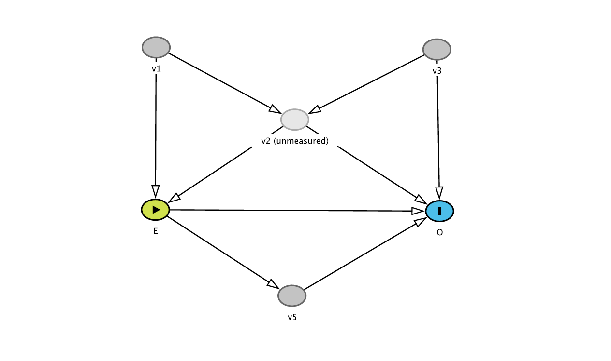
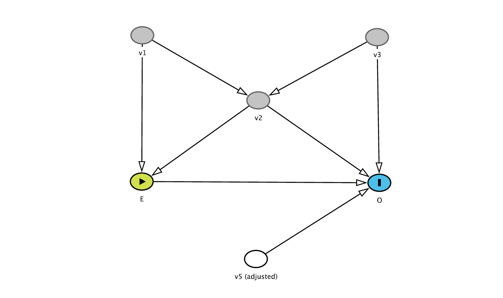

Call:
lm(formula = los ~ age + gender + hr + sysbp + diasbp + bmi +
cvd + sho, data = whas)
Residuals:
Min 1Q Median 3Q Max
-8.335 -2.653 -1.071 1.200 40.073
Coefficients:
Estimate Std. Error t value Pr(>|t|)
(Intercept) 3.2648144 2.1394896 1.526 0.127659
age 0.0031994 0.0168850 0.189 0.849792
genderfemale 0.8575246 0.4489334 1.910 0.056698 .
hr 0.0190577 0.0090828 2.098 0.036396 *
sysbp -0.0008358 0.0085656 -0.098 0.922304
diasbp 0.0141799 0.0128884 1.100 0.271780
bmi -0.0304532 0.0427613 -0.712 0.476700
cvdyes 0.3903925 0.4981468 0.784 0.433600
shoyes 3.5265170 1.0329265 3.414 0.000693 ***
---
Signif. codes: 0 '***' 0.001 '**' 0.01 '*' 0.05 '.' 0.1 ' ' 1
Residual standard error: 4.632 on 491 degrees of freedom
Multiple R-squared: 0.04991, Adjusted R-squared: 0.03443
F-statistic: 3.224 on 8 and 491 DF, p-value: 0.001388Advanced Medical Statistics – Answers lab 7
Part 1: Building prediction models using backward elimination
Step 1: Fit the initial linear regression model
Create an initial model for hospital length of stay (los) using the following predictors: age, gender, hr, sysbp, diasbp, bmi, cvd, sho. Run/summarize the model to inspect coefficients and p-values.
Step 2: Eliminate the least significant predictor
Anova Table (Type III tests)
Response: los
Sum Sq Df F value Pr(>F)
(Intercept) 50.0 1 2.3286 0.1276592
age 0.8 1 0.0359 0.8497924
gender 78.3 1 3.6486 0.0566978 .
hr 94.5 1 4.4025 0.0363962 *
sysbp 0.2 1 0.0095 0.9223042
diasbp 26.0 1 1.2105 0.2717799
bmi 10.9 1 0.5072 0.4766997
cvd 13.2 1 0.6142 0.4336001
sho 250.1 1 11.6561 0.0006929 ***
Residuals 10535.8 491
---
Signif. codes: 0 '***' 0.001 '**' 0.01 '*' 0.05 '.' 0.1 ' ' 1The ANOVA table shows that the predictor with the highest p-value is sysbp (\(p = 0.92\)). Systolic blood pressure is the least significant predictor and should be removed from the model.
Step 3: Repeat the steps
The following variables are sequentially removed from the model (after initially removing sysbp):
age: p-value = 0.86cvd: p-value = 0.41bmi: p-value = 0.44diasbp: p-value = 0.22
Step 4: Final model
Call:
lm(formula = los ~ gender + hr + sho, data = whas)
Residuals:
Min 1Q Median 3Q Max
-8.663 -2.661 -1.064 1.136 40.826
Coefficients:
Estimate Std. Error t value Pr(>|t|)
(Intercept) 3.796075 0.799047 4.751 2.66e-06 ***
genderfemale 0.910388 0.424827 2.143 0.032602 *
hr 0.020680 0.008843 2.339 0.019751 *
shoyes 3.550448 1.009081 3.518 0.000474 ***
---
Signif. codes: 0 '***' 0.001 '**' 0.01 '*' 0.05 '.' 0.1 ' ' 1
Residual standard error: 4.622 on 496 degrees of freedom
Multiple R-squared: 0.04443, Adjusted R-squared: 0.03865
F-statistic: 7.687 on 3 and 496 DF, p-value: 4.976e-05Residual plots


The overall fit of the model appears reasonable, as the residuals are generally centered around zero with no major patterns suggesting severe violations of linearity. However, there are some outliers with very long lengths of stay (LOS) that are not adequately captured by the model. These outliers lead to a right skew in the residual distribution, as seen in the histogram, influencing model fit. While the current model seems to work reasonably well for most observations, further steps (e.g., transformations or robust regression techniques) could be considered to better account for these extreme cases.
Part 2: Automated procedures for building prediction models
Exercise: Automated procedures vs manual model
R
library(MASS)
fit <- lm(los ~ age + gender + hr + sysbp + diasbp + bmi + cvd + sho, data = whas)
step_model <- stepAIC(fit, direction = "backward")Start: AIC=1541.96
los ~ age + gender + hr + sysbp + diasbp + bmi + cvd + sho
Df Sum of Sq RSS AIC
- sysbp 1 0.204 10536 1540.0
- age 1 0.770 10537 1540.0
- bmi 1 10.883 10547 1540.5
- cvd 1 13.179 10549 1540.6
- diasbp 1 25.974 10562 1541.2
<none> 10536 1542.0
- gender 1 78.292 10614 1543.7
- hr 1 94.469 10630 1544.4
- sho 1 250.115 10786 1551.7
Step: AIC=1539.97
los ~ age + gender + hr + diasbp + bmi + cvd + sho
Df Sum of Sq RSS AIC
- age 1 0.682 10537 1538.0
- bmi 1 11.109 10547 1538.5
- cvd 1 12.975 10549 1538.6
- diasbp 1 38.551 10575 1539.8
<none> 10536 1540.0
- gender 1 78.719 10615 1541.7
- hr 1 96.991 10633 1542.6
- sho 1 260.543 10797 1550.2
Step: AIC=1538.01
los ~ gender + hr + diasbp + bmi + cvd + sho
Df Sum of Sq RSS AIC
- cvd 1 14.624 10551 1536.7
- bmi 1 15.372 10552 1536.7
- diasbp 1 37.888 10575 1537.8
<none> 10537 1538.0
- gender 1 84.736 10621 1540.0
- hr 1 101.448 10638 1540.8
- sho 1 264.134 10801 1548.4
Step: AIC=1536.7
los ~ gender + hr + diasbp + bmi + sho
Df Sum of Sq RSS AIC
- bmi 1 12.883 10564 1535.3
- diasbp 1 38.599 10590 1536.5
<none> 10551 1536.7
- gender 1 97.518 10649 1539.3
- hr 1 99.732 10651 1539.4
- sho 1 266.183 10818 1547.2
Step: AIC=1535.31
los ~ gender + hr + diasbp + sho
Df Sum of Sq RSS AIC
- diasbp 1 32.352 10597 1534.8
<none> 10564 1535.3
- hr 1 104.369 10669 1538.2
- gender 1 108.564 10673 1538.4
- sho 1 273.160 10837 1546.1
Step: AIC=1534.84
los ~ gender + hr + sho
Df Sum of Sq RSS AIC
<none> 10597 1534.8
- gender 1 98.11 10695 1537.5
- hr 1 116.84 10713 1538.3
- sho 1 264.48 10861 1545.2summary(step_model)
Call:
lm(formula = los ~ gender + hr + sho, data = whas)
Residuals:
Min 1Q Median 3Q Max
-8.663 -2.661 -1.064 1.136 40.826
Coefficients:
Estimate Std. Error t value Pr(>|t|)
(Intercept) 3.796075 0.799047 4.751 2.66e-06 ***
genderfemale 0.910388 0.424827 2.143 0.032602 *
hr 0.020680 0.008843 2.339 0.019751 *
shoyes 3.550448 1.009081 3.518 0.000474 ***
---
Signif. codes: 0 '***' 0.001 '**' 0.01 '*' 0.05 '.' 0.1 ' ' 1
Residual standard error: 4.622 on 496 degrees of freedom
Multiple R-squared: 0.04443, Adjusted R-squared: 0.03865
F-statistic: 7.687 on 3 and 496 DF, p-value: 4.976e-05The final model obtained from the automated procedure is identical to the manually created model in Part 1.
SPSS

The table above shows the variables eliminated at each step of the backward elimination procedure in SPSS. The final model obtained from the automated procedure is identical to the manually created model in Part 1.
Part 3: Causal diagrams
For each of the exercises below:
- Try solving the diagrams by hand by using the recipe from the lecture (see lecture slides on Brightspace)
- Check your answer using the DAGitty webtool
Exercise 1
In the graph depicted below, for which variables do you need to adjust to assess the unconfounded effect of E on O (there may be several possibilities)?

Answer:
Following the recipe: after removing all arrows leaving E, there are several unblocked paths leading from E to O. Just like in the lecture, adjusting for v2 opens a backdoor path (E – v1 – v3 – O) This newly opened backdoor path needs to be closed by also conditioning on v1 or v3, or both. Hence, there are 3 options: (v1, v2, v3) ; (v1, v2) ; and finally, (v2, v3).
Exercise 2
In the graph depicted below, what happens when you additionally adjust for v5?

Answer: When adjusting for v5, we are blocking the effect through this indirect path from E to O (v5 is a mediator between E and O). Instead of the total effect of E on O, we will be estimating the direct effect.
In DAGitty, when you set v5 to ‘adjusted’, the algorithm will say the following: “The total effect cannot be estimated due to adjustment for an intermediate or a descendant of an intermediate.”
Exercise 3
This diagram is slightly different: v1 now is the exposure. For which variables do you need toadjust to assess the unconfounded effect of v1 on O?

Answer: No adjustment is needed: there are no backdoor paths (removing all arrows leaving v1 reveals no remaining unblocked path from v1 to O).
Exercise 4
Now, v2 is the exposure. For which variables do you need to adjust to assess the total unconfounded effect of v2 on O?

Answer: Following the recipe, there are three unblocked paths left after removing the arrows leaving v2:
- v2 – v3 – O and
- v2 – v1 – E – O
- v2 - v1 – E -v5 - O
Backdoor path a) can be closed by conditioning on v3.
Backdoor path b) can be closed by conditioning on v1 (but not by conditioning on E, as you would no longer be estimating the total effect by blocking the paths from v2 to O mediated by E).
In this case, you should therefore condition on v1 and v3.
Exercise 5
Back to the first DAG. However, v2 is now unmeasured. Can we still obtain an unconfounded estimate of the effect of E on O?

Answer: No, we cannot close the backdoor path between E and O since v2 is unmeasured and cannot be corrected for.
Exercise 6
See the DAG below: you adjusted for v5. What would be the consequence of this action?

Answer: There is no consequence: conditioning on v5 cannot alter any of the estimated effects in the DAG (it is neither a confounder, collider, nor a mediator in the E-O relationship).